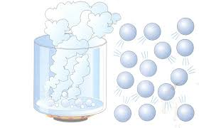
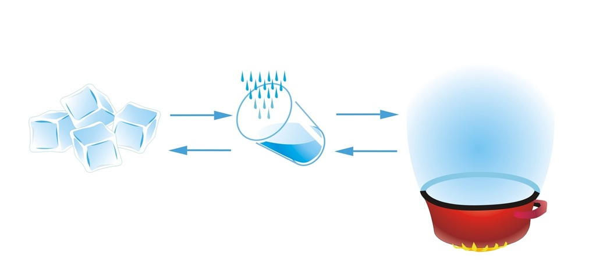

Escrito por emc2
El agua es un compuesto químico, formado por dos átomos de hidrógeno y uno de oxígeno.Es el único elemento natural que se encuentra en los tres estados: sólido (hielo), líquido (agua) y gaseoso (vapor).
"El agua es esencial para la vida en la Tierra
y se encuentra en grandes cantidades en los océanos,
glaciares y como parte de los seres vivos."
La fórmula quimica del agua es H2O indica que una molécula de agua contiene dos átomos de hidrógeno (H) y un átomo de oxígeno (O) unidos entre sí.
El agua en estado sólido se conoce como hielo. Se forma cuando la temperatura del agua desciende por debajo de los 0°C, y las moléculas de agua se organizan en una estructura cristalina. A diferencia de su forma líquida, el hielo es menos denso, lo que explica por qué flota en el agua.
El agua en estado líquido es la forma más común que encontramos en la naturaleza, y es fundamental para la vida en la Tierra.
En este estado, el agua es fluida, flexible y adopta la forma del recipiente que la contiene.
El agua líquida es esencial para el ciclo hidrológico, el transporte de nutrientes y la regulación de la temperatura en los seres vivos.
El agua en estado gaseoso se llama vapor de agua. Es transparente e invisible, y se forma cuando el agua líquida se calienta o se despresuriza. Este vapor de agua se encuentra en la atmósfera y es un componente clave del ciclo hidrológico
El agua puede pasar de un estado a otro a través de procesos como la congelación (líquido a sólido), el derretimiento (sólido a líquido), la evaporación (líquido a gaseoso), la condensación (gaseoso a líquido) y la sublimación (sólido a gaseoso).
